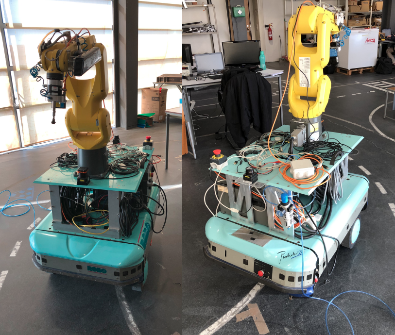
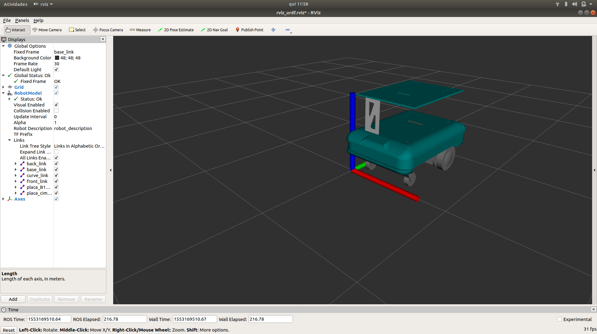

Depois da montagem do hardware e da instalação de todo o software necessário à realização do bin-picking com precisão, consegui reproduzir a tarefa pretendida com sucesso. Devido à impossibilidade de comunicação por Modbus com o manipulador, foi necessário desenvolver um sistema independente que permitisse controlar os IO’s. Deste modo, em anos anteriores desenvolveu-se um sistema com um arduíno que comunica com por tcp/ip com o PC e que atua diretamente as entradas do controlador. Com um auxilio da função “BackGround Logic” existe um programa que está constantemente a verificar essas entradas, e ativa ou desativa o gripper. Alguma falta de documentação relativa a este sistema, dificultou o “debug” do problema… Para tentativa de resolução do problema realizei um programa simples em Python que me permitisse apenas ativar/ desativar o grpper. Deste modo tive o primeiro contacto com a linguagem Python ou que será uma mais valia uma vez que a a Joana Mota deixou algumas ferramentas nessa linguagem…
Após a instalação e nacionalização quer do manipulador, quer da plataforma móvel, foi necessário a montagem dos 2 sistemas, para a formação do ROBONUC. A figura seguinte mostra o estado atual do sistema, após a montagem:

Posto isto, iniciei o modelo URDF da plataforma, uma vez que este ainda não foi efetuado... A tentava começou primeiro pela compreensão dos conceitos inerentes, pela analise de alguns excertos de URDF deixados por antigos alunos, e pela obtenção do modelo URDF através de um “add on” ao solidworks. O estado atual do modelo pode ser visualizado na seguinte figura:

Este modelo, a meu ver, apresenta vários problemas uma vez que a modelação da plataforma tem alguns componentes agrupados num só. Isto é, as rodas estão agrupadas com a base da plataforma num só componente, ou seja as as rodas não estão associadas a qualquer tipo de junta, individualmente. Este “problema” pode-se vir a refletir na associação do modelo total (integrado) ao Moveit. Assim, de modo a perceber se esta situação poderá ou não causar problemas, acho por bem, familiariza-me melhor com a ferramenta MoveIt. Para tal, iniciarei tutoriais relativos a esta ferramenta…
Paralelamente às tarefas referidas anteriormente, inicializei a escrita e organização da dissertação.